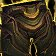

Leggings of Divine Retribution
Leggings of Divine RetributionLeggings of Divine Retribution1544 armor, 51 strength, 51 stamina, 35 crit rating (1.59%), 350 armor penetrationDrops from Gurtogg Bloodboil, Black Temple
1544 armor, 51 strength, 51 stamina, 35 crit rating (1.59%), 350 armor
penetration
Drops from Gurtogg Bloodboil, Black Temple
What influencers say
Showing 5 of 6 captured remarks, widest reach first, with every view
represented
Marrow
Marrow · 10:25
42k views
Puts it on Fury Warrior and Arms Warrior
Marrow calls the legs an insane item whose 350 armour penetration is
absurd for one piece, says DPS warriors absolutely want them, and notes
ret paladins want a different item set entirely.
Marrow
Marrow · 16:59
42k views
Puts it on Fury Warrior
Marrow says that with several DPS warriors he would rank the legs above
the Onslaught chest and shoulders, second only to Cursed Vision on his
personal order, because the loot table is large enough that one may
never see a second pair.
Slesh
Slesh · 15:27
17k views
Puts it on Arms Warrior
Slesh says two-handed arms warriors want the four-piece tier 6 with
these legs as the off piece no matter what.
Jambrosay
Jambrosay · 7:38
6k views
Puts it on Arms Warrior
Jambrosay calls these the big ticket leg option for arms with strength,
crit and 350 armour penetration, well ahead of the Onslaught legs and
far ahead of Leggings of Endless Rage.
Knot
Knot · 31:40
4k views
Puts it on warrior
Knot uses these legs as the benchmark, saying Leggings of Endless Rage
are decent but nowhere close to them.
What routing this item elsewhere costs, each spec measured on its tier
profile with only this slot moving. An ordering derived from
measurement; who receives the drop is the council's call.
| Spec | Standing | At the tier set |
|---|---|---|
| Arms Warrior | BIS | +26.1 ± 1.57 over the next best, Bow-stitched Leggings |
| Fury Warrior | BIS | +18.6 ± 1.56 over the next best, Legguards of Endless Rage |
| Retribution Paladin | Upgrade | +1.5 ± 1.80 over the next best, Bow-stitched Leggings |
Showing all 4 spec cards.
No specs are selected, so no cards are showing. Use Show every spec to bring all of them back.
Arms Warrior
StandingBIS
Constraints
Special-attack hit cap9%special
attacks
Improved Faerie Fire-3%assumed
Gear needs6%
The Precision talent sits in the Fury tree, which this build does not
reach.
Entry set5.1%short
by 0.8%
Tier set, Tier 6 head and shoulder and
chest and hands3.9%short by 2.1%
Closed by 4 hit gems against 8 sockets in the set.
Onslaught Gauntlets 87.78 EPV against Grips of Silent Justice 101.88
from Shade of Akama, and the entry set holds two Tier 5 pieces, at the
head and the chest, so the head token costs the Destroyer two-piece and
not the four-piece; this set holds four Tier 6 pieces, at the head, the
shoulder, the chest and the hands.
White swings stop critting at 69.5%, measured at the special-attack hit
cap.
Nothing rostered reaches it this phase, so crit stays linear all tier.
No haste threshold to protect.
Delta
Leggings of Divine
RetributionLeggings of Divine
Retribution1544 armor, 51 strength, 51
stamina, 35 crit rating (1.59%), 350 armor penetrationDrops from Gurtogg Bloodboil, Black
Temple in Arms Warrior
terms EPV 146.55
| Stat | Over Tier 6, Black Temple
 Onslaught GreavesOnslaught Greaves1597 armor, 62 strength, 41 agility, 55 stamina, 14 hit rating (0.89%), 105 armor penetrationSockets blue · Socket bonus 2 strengthTier set piece, Onslaught Battlegear. Bought with a token, never a raid drop EPV 128.28 |
Over best Phase 3 off-piece, Hyjal Summit Legguards of Endless RageLegguards of Endless Rage1650 armor, 70 strength, 61 stamina, 19 hit rating (1.20%), 46 crit rating (2.08%)Drops from Archimonde, Mount Hyjal EPV 125.24 | Over best pre-phase off-piece, Tempest Keep Greaves of the BloodwarderGreaves of the Bloodwarder1406 armor, 49 strength, 46 stamina, 31 crit rating (1.40%)Sockets red, yellow, blue · Socket bonus 4 strengthDrops from High Astromancer Solarian, Tempest Keep EPV 107.52 | Over Tier 5, Serpentshrine Cavern Destroyer GreavesDestroyer Greaves1459 armor, 52 strength, 57 stamina, 22 hit rating (1.40%), 32 crit rating (1.45%)Sockets red · Socket bonus 2 crit ratingTier set piece, Destroyer Battlegear. Bought with a token, never a raid drop EPV 106.40 | ||||
|---|---|---|---|---|---|---|---|---|
| Change | Converted | Change | Converted | Change | Converted | Change | Converted | |
| armor | -53 | -106 | +138 | +85 | ||||
| strength | -11 | -22 attack power | -19 | -38 attack power | +2 | +4 attack power | -1 | -2 attack power |
| agility | -41 | 0 attack power · -1.24% melee crit | 0 | 0 | 0 | |||
| stamina | -4 | -10 | +5 | -6 | ||||
| hit | -14 | -0.89% | -19 | -1.20% | 0 | -22 | -1.40% | |
| crit | +35 | +1.59% | -11 | -0.50% | +4 | +0.18% | +3 | +0.14% |
| armor penetration | +245 | +245 armor penetration | +350 | +350 armor penetration | +350 | +350 armor penetration | +350 | +350 armor penetration |
| Stat Highlights (Total Change) | -22 attack power +0.34% melee crit -0.89% melee and ranged hit +245 armor penetration | -38 attack power -1.20% melee and ranged hit -0.50% melee crit +350 armor penetration | +4 attack power +0.18% melee crit +350 armor penetration | -2 attack power -1.40% melee and ranged hit +0.14% melee crit +350 armor penetration | ||||
Measured
This spec measures 1909.9 at entry, 1984.1 at the tier set and 2126.7 at
best in slot.
| Item | DPS | Against this item |
|---|---|---|
| Leggings of Divine Retribution (this item, in the best-in-slot set) | 2016.5 ± 1.12 | +0.0 |
| Bow-stitched Leggings | 1990.4 ± 1.10 | -26.1 ± 1.57 |
| Onslaught Greaves | 1989.2 ± 1.12 | -27.3 ± 1.58 |
| Legguards of Endless Rage | 1987.8 ± 1.10 | -28.7 ± 1.57 |
| Shady Dealer's Pantaloons | 1987.4 ± 1.12 | -29.1 ± 1.58 |
| Vengeful Gladiator's Plate Legguards | 1986.0 ± 1.10 | -30.5 ± 1.57 |
| Leggings of Murderous Intent (worn at the tier set) | 1984.1 ± 1.10 | -32.4 ± 1.57 |
| Greaves of the Bloodwarder | 1978.1 ± 1.11 | -38.4 ± 1.58 |
| Destroyer Greaves | 1970.9 ± 1.10 | -45.6 ± 1.57 |
Fury Warrior
StandingBIS
Constraints
Special-attack hit cap9%special
attacks
Improved Faerie Fire-3%assumed
Gear needs6%
The Precision talent is reachable in the Fury tree and this raid's build
does not take it.
Entry set8.8%clear
by 2.8%
Tier set, Tier 6 shoulder and
chest7.7%clear by 1.7%
Dual-wields: white swings miss until 28%, which nothing in this patch
reaches, so hit past the cap still buys accuracy.
White swings stop critting at 50.5%, measured at the special-attack hit
cap.
Nothing rostered reaches it this phase, so crit stays linear all tier.
No haste threshold to protect.
Delta
Leggings of Divine
RetributionLeggings of Divine
Retribution1544 armor, 51 strength, 51
stamina, 35 crit rating (1.59%), 350 armor penetrationDrops from Gurtogg Bloodboil, Black
Temple in Fury Warrior
terms EPV 159.91
| Stat | Over Tier 6, Black Temple Onslaught GreavesOnslaught Greaves1597 armor, 62 strength, 41 agility, 55 stamina, 14 hit rating (0.89%), 105 armor penetrationSockets blue · Socket bonus 2 strengthTier set piece, Onslaught Battlegear. Bought with a token, never a raid drop EPV 131.60 | Over best Phase 3 off-piece, Hyjal Summit Bow-stitched LeggingsBow-stitched Leggings864 armor, 42 agility, 28 stamina, 28 intellect, 100 attack power, 20 crit rating (0.91%)Sockets red, yellow, blue · Socket bonus 4 crit ratingDrops from Azgalor, Mount Hyjal EPV 126.58 | Over best pre-phase off-piece, Tempest Keep Leggings of Murderous IntentLeggings of Murderous Intent380 armor, 45 agility, 31 stamina, 92 attack power, 37 crit rating (1.68%)Drops from Kael'thas Sunstrider, Tempest Keep EPV 111.98 | Over Tier 5, Serpentshrine Cavern Destroyer GreavesDestroyer Greaves1459 armor, 52 strength, 57 stamina, 22 hit rating (1.40%), 32 crit rating (1.45%)Sockets red · Socket bonus 2 crit ratingTier set piece, Destroyer Battlegear. Bought with a token, never a raid drop EPV 106.84 | ||||
|---|---|---|---|---|---|---|---|---|
| Change | Converted | Change | Converted | Change | Converted | Change | Converted | |
| armor | -53 | +680 | +1164 | +85 | ||||
| strength | -11 | -22 attack power | +51 | +102 attack power | +51 | +102 attack power | -1 | -2 attack power |
| agility | -41 | 0 attack power · -1.24% melee crit | -42 | 0 attack power · -1.27% melee crit | -45 | 0 attack power · -1.36% melee crit | 0 | |
| stamina | -4 | +23 | +20 | -6 | ||||
| intellect | 0 | -28 | 0 | 0 | ||||
| attack power | 0 | -100 | -92 | 0 | ||||
| hit | -14 | -0.89% | 0 | 0 | -22 | -1.40% | ||
| crit | +35 | +1.59% | +15 | +0.68% | -2 | -0.09% | +3 | +0.14% |
| armor penetration | +245 | +245 armor penetration | +350 | +350 armor penetration | +350 | +350 armor penetration | +350 | +350 armor penetration |
| Stat Highlights (Total Change) | -22 attack power +0.34% melee crit -0.89% melee and ranged hit +245 armor penetration | +2 attack power -0.59% melee crit +350 armor penetration | +10 attack power -1.45% melee crit +350 armor penetration | -2 attack power -1.40% melee and ranged hit +0.14% melee crit +350 armor penetration | ||||
Measured
This spec measures 2199.5 at entry, 2216.2 at the tier set and 2519.7 at
best in slot.
| Item | DPS | Against this item |
|---|---|---|
| Leggings of Divine Retribution (this item, in the best-in-slot set) | 2250.8 ± 1.13 | +0.0 |
| Legguards of Endless Rage | 2232.2 ± 1.08 | -18.6 ± 1.56 |
| Onslaught Greaves | 2229.2 ± 1.09 | -21.6 ± 1.57 |
| Bow-stitched Leggings | 2225.9 ± 1.09 | -24.9 ± 1.57 |
| Vengeful Gladiator's Plate Legguards | 2222.4 ± 1.09 | -28.4 ± 1.57 |
| Shady Dealer's Pantaloons | 2216.2 ± 1.11 | -34.6 ± 1.58 |
| Leggings of Murderous Intent (worn at the tier set) | 2216.2 ± 1.08 | -34.6 ± 1.56 |
| Greaves of the Bloodwarder | 2208.0 ± 1.09 | -42.8 ± 1.57 |
Protection Warrior
StandingUpgrade
Constraints
Special-attack hit cap9%threat
floor
Improved Faerie Fire-3%assumed
Gear needs6%
The Precision talent sits in the Fury tree, which this build does not
reach.
Entry set6.7%clear
by 0.7%
Tier set, Tier 6 shoulder6.7%clear
by 0.7%
The constraint that decides this spec's gear is crit immunity, which it
reaches at 490 defense skill, or 284 defense rating from gear.
That rating figure assumes Anticipation at 5 ranks, which supplies 20
defense skill. Without it the requirement is 332 rating.
Pushing crushing blows off the attack table needs 102.4% of miss, dodge,
parry and block on the character sheet.
White swings stop critting at 69.5%, measured at the special-attack hit
cap.
Nothing rostered reaches it this phase, so crit stays linear all tier.
No haste threshold to protect.
Delta
Leggings of Divine
RetributionLeggings of Divine
Retribution1544 armor, 51 strength, 51
stamina, 35 crit rating (1.59%), 350 armor penetrationDrops from Gurtogg Bloodboil, Black
Temple in Protection
Warrior terms EPV
197.41
| Stat | Over Tier 6, Black Temple Onslaught LegguardsOnslaught Legguards1597 armor, 24 agility, 78 stamina, 40 defense rating, 41 parry rating, 42 block valueSockets red · Socket bonus 3 staminaTier set piece, Onslaught Armor. Bought with a token, never a raid drop EPV 217.79 | Over best Phase 3 off-piece, Hyjal Summit Legguards of Endless RageLegguards of Endless Rage1650 armor, 70 strength, 61 stamina, 19 hit rating (1.20%), 46 crit rating (2.08%)Drops from Archimonde, Mount Hyjal EPV 214.17 | Over Tier 5, Serpentshrine Cavern Destroyer LegguardsDestroyer Legguards1459 armor, 18 strength, 28 agility, 60 stamina, 39 defense rating, 32 block rating, 33 block valueSockets red · Socket bonus 3 staminaTier set piece, Destroyer Armor. Bought with a token, never a raid drop EPV 191.51 | Over best pre-phase off-piece, Tempest Keep Greaves of the BloodwarderGreaves of the Bloodwarder1406 armor, 49 strength, 46 stamina, 31 crit rating (1.40%)Sockets red, yellow, blue · Socket bonus 4 strengthDrops from High Astromancer Solarian, Tempest Keep EPV 185.69 | ||||
|---|---|---|---|---|---|---|---|---|
| Change | Converted | Change | Converted | Change | Converted | Change | Converted | |
| armor | -53 | -106 | +85 | +138 | ||||
| strength | +51 | +102 attack power | -19 | -38 attack power | +33 | +66 attack power | +2 | +4 attack power |
| agility | -24 | 0 attack power · -0.73% melee crit | 0 | -28 | 0 attack power · -0.85% melee crit | 0 | ||
| stamina | -27 | -270 health | -10 | -100 health | -9 | -90 health | +5 | +50 health |
| hit | 0 | -19 | -1.20% | 0 | 0 | |||
| crit | +35 | +1.59% | -11 | -0.50% | +35 | +1.59% | +4 | +0.18% |
| armor penetration | +350 | +350 armor penetration | +350 | +350 armor penetration | +350 | +350 armor penetration | +350 | +350 armor penetration |
| defense rating | -40 | -16.91 defense skill | 0 | -39 | -16.49 defense skill | 0 | ||
| parry rating | -41 | -1.73% parry | 0 | 0 | 0 | |||
| block rating | 0 | 0 | -32 | -4.06% block | 0 | |||
| block value | -42 | 0 | -33 | 0 | ||||
| Stat Highlights (Total Change) | -270 health -16.91 defense skill -1.73% parry | -100 health | -90 health -16.49 defense skill -4.06% block | +50 health | ||||
Rates
2
attack power per strength·no
melee attack power from agility·33
agility per 1% crit·10
health per stamina, before talents and Blessing of Kings·22.08
rating per 1% melee crit·armor
penetration counted as itself·2.365385
rating per 1 defense skill point·23.653847
rating per 1% parry·15.77
rating per 1% melee and ranged hit·7.884615
rating per 1% block
Retribution Paladin
StandingUpgrade
Constraints
Special-attack hit cap9%special
attacks
Precision-3%
Improved Faerie Fire-3%assumed
Gear needs3%
Entry set3.7%clear
by 0.7%
Tier set, no Tier 6 piece
worn3.7%clear by 0.7%
Lightbringer Gauntlets 56.46 EPV against Gloves of the Searing Grip
65.57, and no Retribution set bonus in either tier is a damage bonus;
this set holds no Tier 6 piece and keeps Gloves of the Searing Grip at
the hands.
White swings stop critting at 69.5%, measured at the special-attack hit
cap.
Nothing rostered reaches it this phase, so crit stays linear all tier.
No haste threshold to protect.
Delta
Leggings of Divine
RetributionLeggings of Divine
Retribution1544 armor, 51 strength, 51
stamina, 35 crit rating (1.59%), 350 armor penetrationDrops from Gurtogg Bloodboil, Black
Temple in Retribution
Paladin terms EPV
84.22
| Stat | Over best Phase 3 off-piece, Hyjal Summit Bow-stitched LeggingsBow-stitched Leggings864 armor, 42 agility, 28 stamina, 28 intellect, 100 attack power, 20 crit rating (0.91%)Sockets red, yellow, blue · Socket bonus 4 crit ratingDrops from Azgalor, Mount Hyjal EPV 89.16 | Over Tier 6, Black Temple Lightbringer GreavesLightbringer Greaves1597 armor, 68 strength, 48 stamina, 22 intellect, 38 crit rating (1.72%)Sockets red · Socket bonus 2 hit ratingTier set piece, Lightbringer Battlegear. Bought with a token, never a raid drop EPV 80.41 | Over best pre-phase off-piece, Tempest Keep Greaves of the BloodwarderGreaves of the Bloodwarder1406 armor, 49 strength, 46 stamina, 31 crit rating (1.40%)Sockets red, yellow, blue · Socket bonus 4 strengthDrops from High Astromancer Solarian, Tempest Keep EPV 76.95 | Over Tier 5, Serpentshrine Cavern Crystalforge GreavesCrystalforge Greaves1459 armor, 59 strength, 27 agility, 42 stamina, 23 intellect, 21 hit rating (1.33%)Sockets yellow · Socket bonus 2 strengthTier set piece, Crystalforge Battlegear. Bought with a token, never a raid drop EPV 73.00 | ||||
|---|---|---|---|---|---|---|---|---|
| Change | Converted | Change | Converted | Change | Converted | Change | Converted | |
| armor | +680 | -53 | +138 | +85 | ||||
| strength | +51 | +102 attack power | -17 | -34 attack power | +2 | +4 attack power | -8 | -16 attack power |
| agility | -42 | 0 attack power · -1.68% melee crit | 0 | 0 | -27 | 0 attack power · -1.08% melee crit | ||
| stamina | +23 | +3 | +5 | +9 | ||||
| intellect | -28 | -22 | 0 | -23 | ||||
| attack power | -100 | 0 | 0 | 0 | ||||
| hit | 0 | 0 | 0 | -21 | -1.33% | |||
| crit | +15 | +0.68% | -3 | -0.14% | +4 | +0.18% | +35 | +1.59% |
| armor penetration | +350 | +350 armor penetration | +350 | +350 armor penetration | +350 | +350 armor penetration | +350 | +350 armor penetration |
| Stat Highlights (Total Change) | +2 attack power -1.00% melee crit +350 armor penetration | -34 attack power -0.14% melee crit +350 armor penetration | +4 attack power +0.18% melee crit +350 armor penetration | -16 attack power +0.51% melee crit -1.33% melee and ranged hit +350 armor penetration | ||||
Measured
This spec measures 2041.3 at entry, 2040.4 at the tier set and 2223.2 at
best in slot.
| Item | DPS | Against this item |
|---|---|---|
| Leggings of Divine Retribution (this item) | 2054.2 ± 1.27 | +0.0 |
| Bow-stitched Leggings (in the best-in-slot set) | 2052.7 ± 1.27 | -1.5 ± 1.80 |
| Legguards of Endless Rage | 2048.5 ± 1.27 | -5.7 ± 1.80 |
| Lightbringer Greaves | 2047.8 ± 1.27 | -6.4 ± 1.80 |
| Leggings of Murderous Intent | 2043.5 ± 1.26 | -10.7 ± 1.79 |
| Greaves of the Bloodwarder (worn at the tier set) | 2040.4 ± 1.26 | -13.8 ± 1.79 |
| Shady Dealer's Pantaloons | 2040.1 ± 1.26 | -14.1 ± 1.79 |
| Crystalforge Greaves | 2033.7 ± 1.26 | -20.5 ± 1.79 |